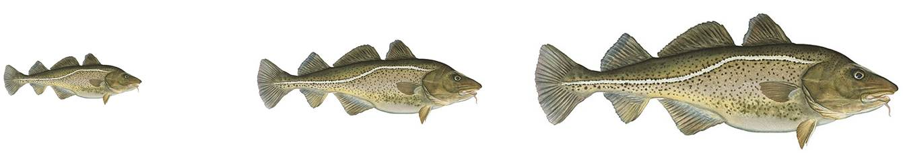

But now with log transformed data on the x and y axes

Andrew Jackson
Associate Professor
But now with log transformed data on the x and y axes


If the coefficient of \(Length\) is exactly 3, then the fish are growing isometrically and staying exactly the same shape. that is their width and depth is growing in proportion to their length.

If the coefficient of \(Length\) is less than 3, then the fish are putting on less mass than you would predict which means their width and/or depth is not increasing in proportion to their length and they are becoming thinner as they get longer.

If the coefficient of \(Length\) is greater than 3, then the fish are putting on more mass than you would predict which means their width and/or depth is not increasing in proportion to their length and they are becoming broader as they get longer.


With a scaling relationship of \(Mass = 0.01 * Length ^ {3.15}\), is mass scaling:
Isometric scaling for mass which is directly proportional to volume would be to power 3
3.15 is larger than 3, so these fish are putting on more mass for a given length as they get larger.

If \(\log_{10}(Mass)\) increases by one unit, how much does mass increase by?
\(10 = \log_{10}(1)\)
If we consider we have \(y = \log_{10}(x)\) and add one \(y\) then we have \(y + 1 = 1 + \log_{10}(x)\) which is
equal to \(y + 1 = \log_{10}(10) + \log_{10}(x)\) which by applying the rule log of product is sum of logs
gives us \(y + 1 = \log_{10}(10 * x)\). So, a one unit increase in \(y\) which reprents \(\log_{10}(x)\) results in an increase in \(x\) by a multiplication of 10.


What exponent would we expect \(b\) to take in this equation if \(brain mass\) scales isometrically with \(body mass\)?
Both brain mass and body mass are on the same scale of grams or kilograms (or similar), so if one of them doubles, what would you expect the other to do if it was scaling at the same rate?
If brain size increases at the same rate as body size, we would expect the proportion of body mass that is brain mass to remain the same regardless of the size of the organisms. That is, \(Mass_{brain} = a * Mass_{body} ^ 1\) or more simply \(Mass_{brain} = a * Mass_{body}\) where \(a\) is the proportion of body mass that is brain mass or simply the ratio \(a = \frac{Mass_{brain}}{Mass_{body}}\)